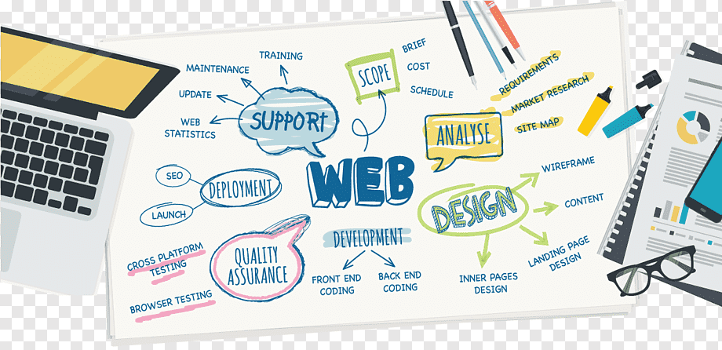
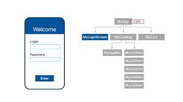

Web & App DevelopmentWeb & App Development: Transforming ideas into functional and user-friendly digital solutions for seamless online experiences.
|
Graphic DesigningGraphic design is the creative process of combining visual elements to communicate a concept or idea effectively.
|
Artificial IntelligenceArtificial Intelligence: Empowering machines to simulate human intelligence and perform tasks with learning and adaptation capabilities.
|
Cyber SecurityCybersecurity is the practice of protecting computer systems, networks, and data from unauthorized access, attacks, and damage.
|
Digital MarketingDigital marketing is the strategic use of online platforms and channels to promote products, services, or brands and engage with target audiences.
|
FlutterFlutter: Google's open-source UI toolkit for building natively compiled apps for mobile, web, and desktop from a single codebase.
|